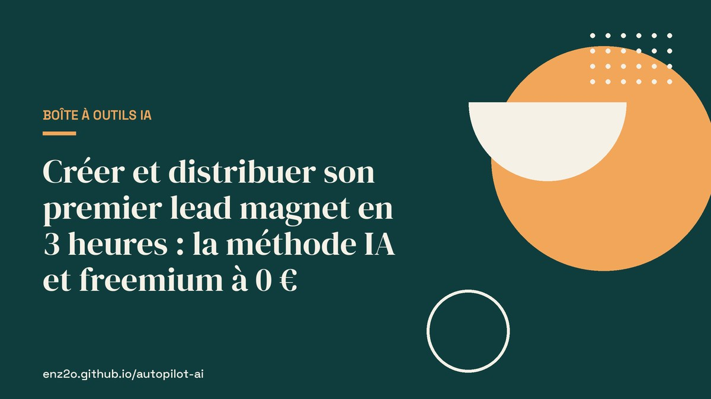

Créer et distribuer son premier lead magnet en 3 heures : la méthode IA et freemium à 0 €
2026-11-19
Article contenant des liens affiliés.

Pour un freelance ou un créateur de contenu, attendre passivement que les clients ou les abonnés frappent à la porte est une stratégie risquée. La solution classique consiste à proposer une ressource gratuite à forte valeur ajoutée — un « lead magnet » ou aimant à prospects — en échange d'une adresse email. Il peut s'agir d'une checklist opérationnelle, d'un mini-guide PDF, d'un modèle de document ou d'une courte formation vidéo.
Pourtant, beaucoup reculent devant l'ampleur de la tâche : syndrome de la page blanche, mise en page laborieuse et abonnements logiciels onéreux pour gérer les pages de capture et l'envoi des courriels.
Bonne nouvelle : il est aujourd'hui possible de concevoir, designer et automatiser la distribution d'une ressource attractive en une seule après-midi, sans débourser le moindre centime.
Étape 1 : Identifier un problème douloureux avec l'IA conversationnelle
Un bon lead magnet ne cherche pas à tout expliquer. Il résout un micro-problème précis et urgent pour votre cible.
Pour trouver cette idée percutante, utilisez la version gratuite d'une intelligence artificielle générative (comme ChatGPT, Claude ou Perplexity) non pas pour écrire à votre place, mais comme un partenaire d'idéation.
Le prompt d'exploration
Soumettez ce contexte à l'outil :
« Je suis [votre métier/niche] et j'aide [votre cible]. Liste les 5 obstacles les plus immédiats que rencontre ma cible au démarrage de leur journée ou projet. Propose ensuite pour chacun une ressource actionnable en moins de 15 minutes (checklist, template, méthode en 3 étapes). »
Sélectionnez le format le plus rapide à consommer. Un document de 3 pages ultra-pratique aura toujours plus d'inscrits qu'un e-book théorique de 40 pages que personne ne lit.
Pour clarifier vos idées avant de vous asseoir devant l'écran, il est souvent utile de noter vos réflexions à la main avec un carnet de notes à spirale pour poser vos grandes lignes sans distraction numérique.
Étape 2 : Rédiger un contenu dense et actionnable
Le piège courant consiste à demander à l'IA d'écrire l'intégralité du texte d'un seul coup. Le résultat est souvent plat, verbeux et dénué d'expérience vécue. Adoptez plutôt une démarche collaborative.
La méthode pas à pas :
- Générez le plan détaillé : Demandez à l'outil une structure logique en 3 à 5 sections opérationnelles.
- Remplissez avec votre expertise : Pour chaque point, notez vos propres conseils, anecdotes réelles ou avertissements.
- Faites reformuler par l'IA : Soumettez vos notes brutes à l'IA avec la consigne de synthétiser sous forme de puces claires et d'étapes actionnables.
- Ajoutez un appel à l'action clair : En toute fin de ressource, indiquez la prochaine étape logique (réserver un appel découverte, découvrir vos services, s'abonner à votre newsletter).
Gardez un ton direct, sans jargon inutile. Votre lecteur doit pouvoir tester votre conseil dès le jour même.
Étape 3 : Créer un design soigné sans compétences graphiques
Un document brut au format texte ne valorise pas votre travail. Pour lui donner une allure professionnelle, pas besoin de maîtriser des logiciels de PAO complexes.
- Outils freemium de conception (ex. Canva) : Utilisez la version gratuite en cherchant les modèles « fiches de travail », « guide PDF » ou « checklist ».
- Sobriété avant tout : Limitez-vous à deux typographies (une pour les titres, une pour le corps de texte) et deux couleurs principales issues de votre identité visuelle.
- Exportez au format PDF standard : Assurez-vous que les liens cliquables à l'intérieur du document fonctionnent correctement.
Si vous passez plusieurs heures d'affilée à ajuster visuels et typographies, pensez à votre confort de travail en optant pour une souris ergonomique sans fil qui prévient les tensions au poignet lors des manipulations précises.
Étape 4 : Mettre en place la page de capture et la livraison automatique
C'est généralement ici que les créateurs et indépendants se découragent : comment relier le formulaire au fichier PDF et envoyer l'email de bienvenue sans payer un outil de capture, un hébergeur et un autorépondeur séparés ?
Pour contourner ces coûts fixes, la solution la plus simple est de regrouper ces fonctions au sein d'une seule interface gratuite. Avec Systeme.io, vous pouvez héberger votre page de capture, stocker votre ressource et déclencher l'envoi immédiat de l'email sans débourser un centime, grâce à son offre freemium très généreuse.
Le tunnel minimaliste en 3 étapes :
- La page de capture : Un titre accrocheur résumant la promesse (« Obtenez la checklist pour… »), trois puces décrivant les bénéfices, un visuel de votre document et un champ email.
- La page de remerciement : Un message confirmant la bonne réception de la demande et invitant le visiteur à vérifier sa boîte de réception.
- La séquence automatique : Un email envoyé instantanément contenant le lien de téléchargement direct de votre ressource.
Grâce à Systeme.io, l'ensemble de ces automatisations se configure en quelques clics sans compétences techniques en programmation.
Étape 5 : Partager votre ressource et analyser les retours
Votre système est prêt. Il ne vous reste plus qu'à alimenter l'entrée de votre entonnoir.
3 canaux sans budget pour démarrer :
- Votre profil LinkedIn ou Twitter : Rédigez un court post résumant l'un des enseignements phares de votre guide, puis indiquez en commentaire ou en biographie le lien vers votre page de capture.
- Votre signature d'email : Ajoutez une ligne discrète avec un lien direct vers votre ressource gratuite à destination de vos interlocuteurs quotidiens.
- Les communautés professionnelles : Partagez votre retour d'expérience dans des groupes ciblés (en respectant les règles contre l'auto-promotion directe) et proposez le support à ceux qui expriment un besoin explicite.
Surveillez le taux de conversion de votre page de capture. Si moins de 20 % des visiteurs s'inscrivent, simplifiez votre promesse ou ajustez le titre de votre ressource.
Conclusion : Un actif numérique durable pour votre activité
Construire une audience qualifiée ne nécessite pas de gros budgets ni des semaines de développement. En combinant la puissance de l'IA pour l'idéation, des outils graphiques freemium pour la présentation, et un écosystème tout-en-un comme Systeme.io pour l'hébergement et l'emailing, vous mettez en place un mécanisme pérenne qui travaille pour vous 24h/24.
Prenez trois heures cette semaine, choisissez un problème précis de votre audience et déployez votre première ressource gratuite.